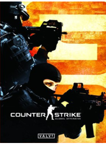

Counter-Strike este un mod al cunoscutului joc video Half-Life ce face parte din clasa jocurilor First-Person Shooter (FPS) tactic, abreviat "CS", realizat de Minh Le şi Jess Cliffe. Acest mod a fost dezvoltat într-o serie de variante de la lansarea originala, ce conţine în prezent Counter-Strike Condition Zero, Counter-Strike Source şi Counter-Strike pentru platforma Xbox. Ultima versiune a acestui joc este Counter-Strike Global Offensive.
Preţ : 51,12 €